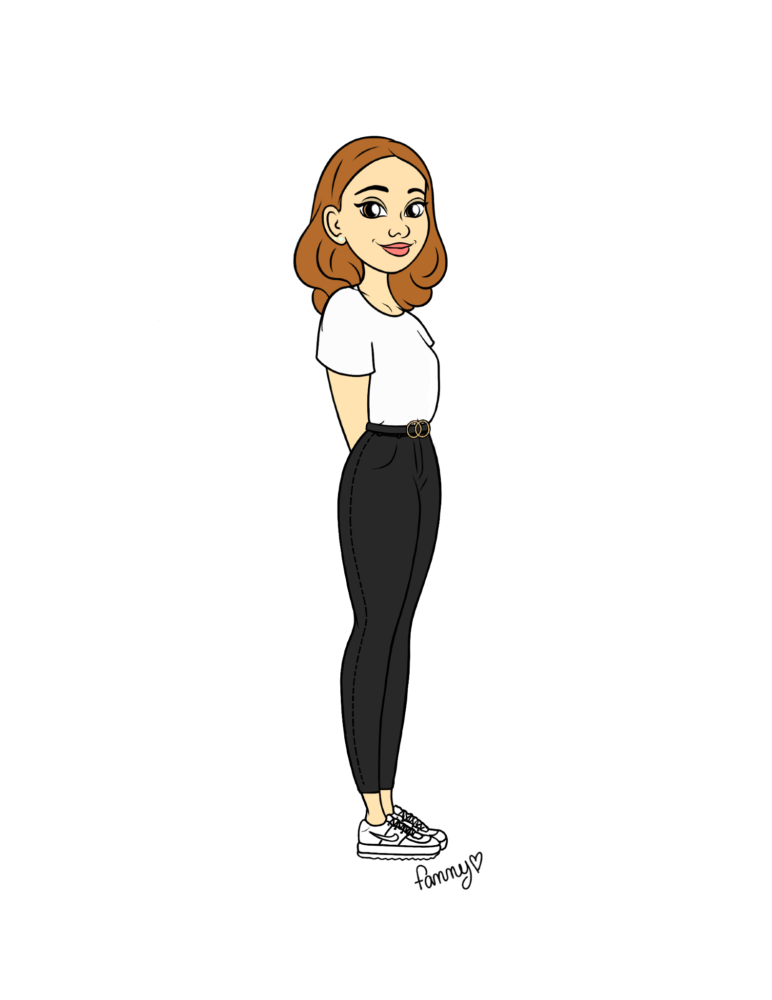

@alexannelemaile

Alexanne Lemaile

alexannelaCM

alexannelm
Community Manager - Agence Maga Communication (2019/2020, Saint-Herblain)
Community Manager - Carnaval des Gais Lurons de Vitré
Assistante Chargée de communication - Route Adélie (édition 2019, Vitré)
Stage Assitante PAO - Imprimerie Porcher (2018/2019, Saint-Malo)
Stage Community Manager - Breizh in Love (2018, Saint-Malo)
Suite Adobe, Microsoft Suite, Canva, Facebook Business Manager, Wordpress, Hootsuite, Google Suite, Creator Studio
Savoir-être
Bachelor 3 Webmarketing et Social Media (2019/2020, My Digital School Nantes)
BTS communication (Lycée Bertrand d’Argentré, 2019,Vitré)
Baccalauréat STMG option Ressources Humaines et Communication (Lycée Jacques Cartier, 2014/2017,Saint-Malo)